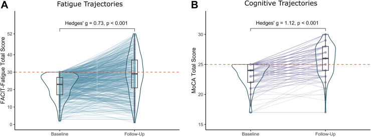
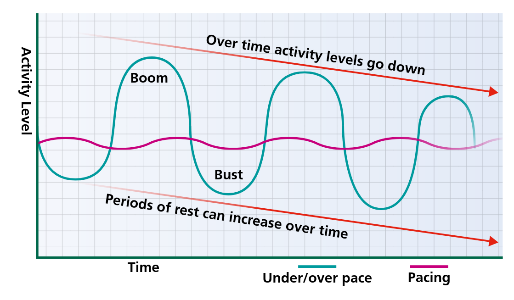

Long Covid Links
As promised, here are some links related to the talk I gave at PyCon UK. Thank you for being such a lovely audience. I particularly appreciate all the people who approached me after the talk to share their own experiences with Covid. It's a lonely business being ill and recovering, so it was heartening to find that it resonated with so many.
How 'long' is it?
Longer than you'd think. The NHS website explains that symptoms have to last more than 12 weeks to be counted as 'Long Covid' here in the UK.
There are a lot of people who fall in that gap. Three months is a significant time for anyone to be fatigued and feverish or to have problems with their memory and concentration, but not yet be able to access specialist advice from a Long Covid clinic. Some people will begin to spontaneously recover before they get such a referral - but they will still have been impacted and might be navigating their recovery alone. It's partly to fill in that gap that I wanted to give my talk.
Recovery over time

Fatigue and cognitive problems are common after Covid. But recovery is also common. About half of people diagnosed with Long Covid in a German study recovered spontaneously within two years, and a greater proportion saw their symptoms improve somewhat.
The study also found that if you catch Covid again it doesn't seem to affect your chances either way of recovering from any existing fatigue (hurrah!).
Aftermath
In the year after recovering from even a mild case of Covid you're about 40% more likely to develop diabetes and have an increased chance of a heart attack or a stroke.
Take care of your colleagues and watch out in particular for the signs of a stroke (act FAST!) and for the different symptoms of a heart attack in women.
I wound up with insomnia for quite a while afterwards, which turns out to be surprisingly common especially in younger people. Watch out for worsening or new-onset anxiety or depression, too, as these can also be triggered by Covid and need their own treatment.
Things that may help
When I was initially planning this talk, I filled a whole section with lots of very specific advice such as the exact type of anti-inflammatory I took, or details of a speculative treatment that my friend is trying with some success.
But when editing, I cut out those parts. I think that for me to give detailed advice is unhelpful and I'd be at risk of turning myself into one of the very quacks I warned against. Full evidence is not yet in for most things, and the high proportion of spontaneous recoveries mean it's hard to pin down things that definitely help. If you are struggling your best course of action is to find a sympathetic GP or occupational therapist, preferably get referred to a Long Covid clinic, and work with them on your specific health challenges. I am not a medical professional!
That said, there are two general tips I still want to pass along: on pacing and on sunlight.
Pacing
I always wanted to be an astronaut. Who knew I would end up having something in common with them?
Astronauts who return to Earth after a long period in space experience something called deconditioning. After the weightlessness of space their muscles have wasted away and it's hard for them to build their strength back up. Ordinary actions become more difficult. The same thing happens to people who have had a long period in bed, especially the elderly. When you've had to rest during a longer illness it's important to very gently get back into physical activity and not overdo it.
Post-exertional fatigue is a bit different than deconditioning; it doesn't hit you as you're exercising but after a time lag of an hour to a few days. You can struggle with both at the same time. This semi-scientific graph from NHS Bradford Hospitals Trust illustrates the problem:

Everyone has better days and worse days when dealing with a chronic illness. If you do too much on the better days, post-exertional fatigue will limit your activity on following days. There can be a vicious cycle of trying to get more done when you're feeling a little brighter, followed by days of needing to rest more. Over time this leads to less total activity.
Pacing is a technique taught by physiotherapists. It aims to counter the vicious cycle by teaching people to budget their limited energy and plan out their days.
This guide to pacing from the Royal College of Occupational Therapists is very useful. It describes in good detail some of the methods you can use to reduce physical and mental energy use and pace yourself throughout the day. It breaks down ordinary tasks into smaller pieces and has helpful examples of how to build rest periods into your day.
It is not a cure. A famous and vivid story about how pacing feels from the inside is the spoon theory by Christine Miserandino.
Be wary of following advice from anyone who is not a physiotherapist or occupational therapist. Post-exertional malaise is poorly understood and it is very tempting to treat it as something that you should just be able to snap out of with enough willpower. Even GPs can fall prey to these disproved ideas - they may have trained quite a while ago, with only a few hours total on this kind of fatigue.
Some of the strongest-willed friends I have are still dealing with Long Covid fatigue. If anyone could will their way past it, they could - but their bodies refuse to obey them.
Sunlight
There is a link between latitude in the UK and health - the further north you go, the higher all-cause mortality rises. There are a lot of possible factors that might be behind this. But even when you control for the UK's obvious north-south wealth divide, there still seems to be something else at work here.
Dr Richard Weller, a dermatologist, has a fascinating talk 'Why Are Scots So Sick' where he lays out his theory that this is because sunlight exposure does something helpful in the skin. Specifically, he thinks UVA rays release stores of Nitric Oxide and that this helps to lower blood pressure on a population level. The further south you go, the more sunlight you can get, so the better heart health you might have.
Blue and green spaces are good for our health in other ways but this suggests sitting outside in the sunshine might be particularly helpful - not just supplementing vitamin D. Anecdotally, I always find I can concentrate better after a good spell in the sun.
Where are the new cases concentrated?
Long Covid cases are not evenly distributed. So who is suffering the brunt of Covid, and why? There seems to be a pretty clear tie to deprivation.

I made a map out of the Index of Multiple Deprivation 2019 data for Local Authorities (with Python, of course!)
The Geographic Data Service has a much better one broken down by Lower Super Output Area. Each LSOA is a combination of a few postcodes with perhaps 1000-3000 people total, so it's a really fine-grained look at neighbourhoods.
The Office for National Statistics data shows that in England at the height of the pandemic, the age-standardised mortality rate for deaths involving COVID-19 in the most deprived areas was more than double the mortality rate in the least deprived areas. Poverty leads to worse health and deprived areas tend to remain that way across generations, trapping people in cycles of inequality.
It might be why Covid has vanished from some fortunate people's personal radar - different parts of the country and even streets within the same city will have had different experiences with the disease.
What to take away
Do consider another covid vaccination to boost your immunity. In the UK this is covered for free for the elderly, immunocompromised and anyone else whose doctor recommends it. You can get it at the same time as your seasonal flu jab. It is also now available privately and regularly updated to defend against the newer strains.
Consider masking during high risk occasions such as conferences or other large gatherings of people where a lot of time is spent indoors - I noticed a few fellow attendees at PyCon UK chose to mask up and I'm glad the organisers made mask-friendly policies explicit.
Keep an eye on Covid cases nearby to get a better understanding of what is happening. We now have the UKHSA dashboard for public health data which tracks Covid cases (and several other diseases) and even breaks them down by local authority.
Set up your work environment for better health. Encourage anyone who is sick to take time off or work from home. Good ventilation at work and in schools is another important way to mitigate ongoing spread of Covid. There's evidence it can reduce the chances of developing a severe case if you do get infected. If you're in a position of authority at work then you can use it to help put these things in place for your colleagues - you will all benefit. Don't ever be embarrassed to ask to meet outside or in a less crowded environment, to turn up the air conditioning or open a window for fresh air.
Keep lateral-flow tests at home and test yourself if you get sick. I wouldn't have been certain or been able to prove I was suffering from Long Covid if I hadn't taken a test earlier. Some NHS foundations will not treat you for Long Covid if you haven't tested, or will continue for much longer to try to rule out other issues that can cause fatigue. Any leftover tests that the government sent you during the pandemic are probably expired, so make sure you have a fresh one on hand.
If you do test positive, try to give yourself grace and allow a longer recovery time than you'd prefer. Rushing back to work might accelerate fatigue and mean needing more time off in the long run. Pace yourself.
And remember you are not alone.